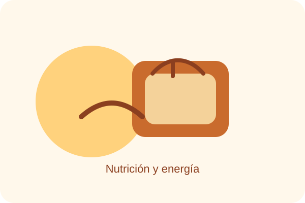
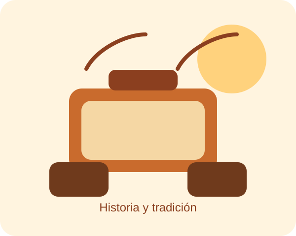
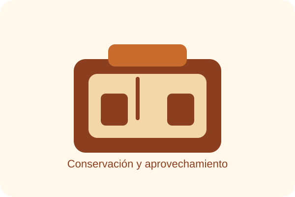
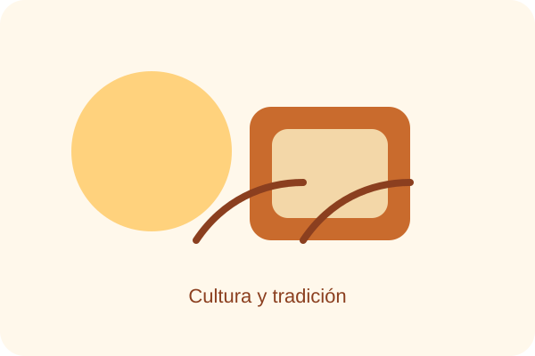

Nutrición
Ofrece proteínas, calcio y vitaminas importantes para el crecimiento y la salud.
Exposición interactiva
El queso es más que un alimento increible: ha acompañado a la humanidad por siglos como fuente de nutrición, herramienta para conservar alimentos y símbolo de identidad cultural.

Por qué importa

Ofrece proteínas, calcio y vitaminas importantes para el crecimiento y la salud.

Permitió aprovechar mejor la leche y mantener alimentos por más tiempo.

Forma parte de recetas, celebraciones y tradiciones en muchos lugares del mundo.
Experimento visual
El queso aporta calcio y proteínas que ayudan a construir huesos y músculos.
Gracias a su elaboración, el queso permitió conservar la leche por más tiempo y reducir desperdicios.
En cada región tiene un valor simbólico y gastronómico que refleja la historia del lugar.
Imágenes y contexto
Ha sido una fuente de energía y nutrientes durante generaciones.
Permitió aprovechar mejor la leche y extender su consumo.
Se conserva en recetas, mercados y celebraciones de muchas comunidades.
El queso es importante porque combina utilidad, sabor y tradición. Su valor va más allá de la comida: representa progreso, cultura y cuidado del bienestar.